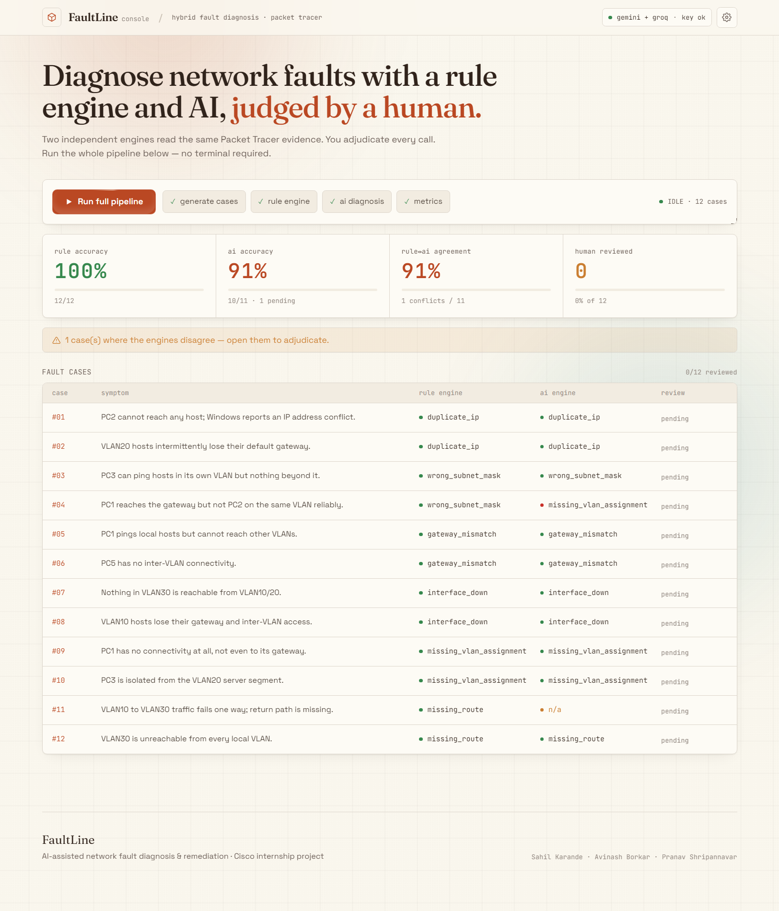
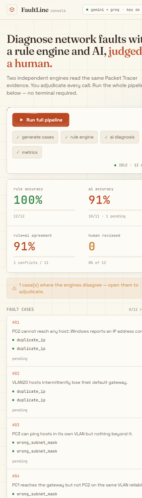

Manual network troubleshooting is slow and inconsistent. FaultLine is a hybrid diagnostic pipeline that reads real Cisco Packet Tracer command output and identifies the injected fault two independent ways — a deterministic Python/TypeScript rule engine and an LLM reasoning module — then places a human in the loop to adjudicate every AI recommendation before it is applied and verified.

Every case is one clone of a "golden" topology (2 routers, a switch with VLANs 10/20/30, several PCs) with exactly one injected fault. The same collected evidence — show ip interface brief, show ip route, show vlan brief, ipconfig, ping — is fed to both engines in parallel, then compared. The novelty is the comparison + human-review stage: nothing the AI suggests is treated as final until a person accepts, edits, or rejects it.
Twelve cases — two per fault type — each with a reported symptom and ground-truth label:
| Fault type | What is injected | Example symptom |
|---|---|---|
| duplicate_ip | Two hosts share one IP | PC reports an IP address conflict |
| wrong_subnet_mask | Host mask ≠ segment mask | Local reachable, remote not |
| gateway_mismatch | Default gateway points nowhere | Local OK, no inter-VLAN |
| interface_down | Router/trunk port shut | A whole segment unreachable |
| missing_vlan_assignment | Access port left in VLAN 1 | Host fully isolated |
| missing_route | Static route removed | One-way / remote unreachable |
The rule engine is deterministic and scores 12/12 — it parses the evidence and diffs it against the golden baseline. The AI (Gemini + Groq) typically lands 10–12 / 12; when it disagrees with the rule engine or fails to answer, the case is surfaced for a human to adjudicate. That disagreement is the point: the AI is advisory, never autonomous.
| Metric | Result | Notes |
|---|---|---|
| Rule-engine accuracy | 12 / 12 = 100% | Each a single high-confidence finding |
| AI accuracy | ~10–12 / 12 | Scored over cases actually diagnosed |
| Rule ↔ AI agreement | ~90–100% | Disagreements routed to human review |
| Human decisions | accept / edit / reject | Every decision logged (Postgres) |
| Time to diagnosis | < 1 s rule · 2–6 s AI | vs. 5–15 min manual |
The console is fully responsive — the same run-the-pipeline, review-every-call flow, stacked for a phone.
Live · cisco-project-a1jk.vercel.app
Repo · github.com/sahilkarande0918-cmd/CISCO-Project

Two independent engines on identical evidence, with a logged human decision on every AI call — governance you can point to, not just a model output.
Deterministic parser (regex → JSON, ported Python→TypeScript, verified 12/12), resilient two-provider AI with timeouts + fallback, and live per-case progress.
Sahil Karande · Avinash Borkar · Pranav Shripannavar
Cisco internship · AI-Assisted Network Fault Diagnosis & Remediation System
FaultLine turns manual, inconsistent troubleshooting into a fast, explainable, human-governed pipeline — deterministic where it can be, AI-assisted where it helps, and always adjudicated by a person before a fix lands.